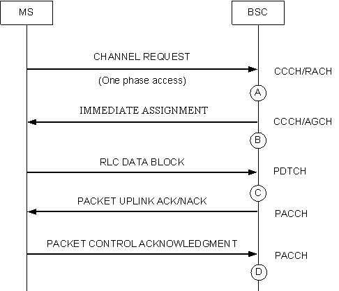
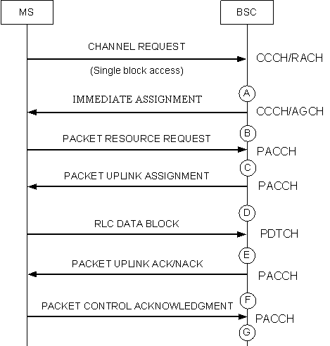
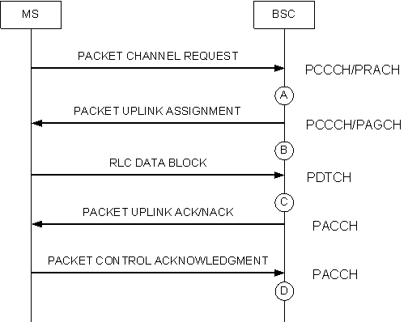

Measurement Counters
| ID | Counter | Description |
|---|---|---|
| 1279170417 | UPLINK.ASS | A9501:Number of Uplink Assignments |
| 1279170419 | UPLINK.IMM.ASS | A9503:Number of Uplink PS Immediate Assignments |
| 1279170421 | PACCH.UPLINK.ASS | A9505:Number of Uplink Assignments on PACCH |
Description
These three measurements provide the number of uplink resource assignments, which is the total number of uplink packet immediate assignments and uplink assignments on the PACCH.
Measurement point
The uplink assignment involves the following aspects:
Immediate assignment
When receiving the packet CHANNEL REQUEST message, the BSC sends an IMMEDIATE ASSIGNMENT message to the MS, specifying the uplink radio channel assigned to the MS. Figure 1 shows the uplink immediate assignment procedure. Each time the BSC sends an uplink assignment message (see measurement point B), the counter is incremented by one.

Uplink assignment on the PACCH
When receiving the uplink resource request on the uplink or downlink PACCH, the BSC sends a PACKET UPLINK ASSIGNMENT message to the MS, specifying the uplink radio channel assigned to the MS. Figure 2 and Figure 3 show the procedure for the BSC sending an packet uplink assignment message on the PACCH. Each time the BSC sends an packet uplink assignment message (see measurement point D and measurement point B), the counter is incremented by one.


Uplink assignment on the PCCCH
When receiving the PACKET CHANNEL REQUEST message on the PRACH, the BSC sends a PACKET UPLINK ASSIGNMENT message to the MS on the PCCCH if the PCCCH is configured in the cell, specifying the uplink radio channel assigned to the MS. Figure 4 shows the procedure for the BSC sending a PACKET UPLINK ASSIGNMENT message on the PCCCH. Each time the BSC sends a PACKET UPLINK ASSIGNMENT message (see measurement point B), the counter is incremented by one.

Formula
None
Unit
None
Related Features
| Counter | Feature ID | Feature Name |
|---|---|---|
| UPLINK.ASS |
GBFD-119111 |
Assignment |
| UPLINK.IMM.ASS |
GBFD-119110 |
Access |
| PACCH.UPLINK.ASS |
GBFD-119111 |
Assignment |